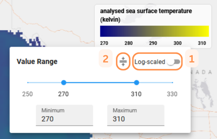
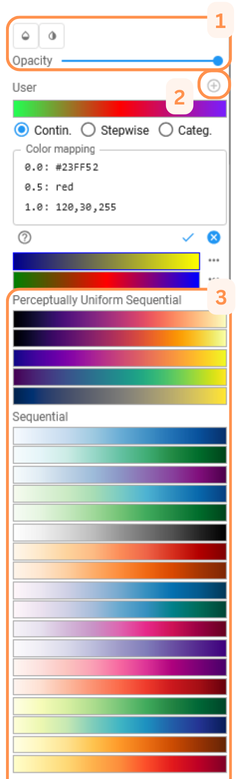

Color Mapping¶
Adjust the Value Range¶
To modify the value ranges of the displayed variable, click on the legend area where the value ticks are shown.
Min/Max¶
Enter the desired values in the Minimum and/or Maximum text fields, or adjust the values directly with the slider.

Log-scaling¶
Enable log-scaling for the value range by toggling the switch in the top-right corner. [1]
Color Map Value Range¶
If the color mapping has an assigned value range, apply it to the variable using the button at the top. [2]
Change or create Color Maps¶

Change the color mapping by clicking on the color range in the legend.
Modify Map Presentation¶
Modify the presentation of the selected color map by [1]
- changing the opacity
- hiding small values
- reversing the color map
Predefined Color Maps¶
Select a desired predefined color map from a wide range of maps (e.g. sequential, diverging, qualitative) [3].
User-defined Color Maps¶
Add a user-defined color map with the +-button [2]. User-defined color mapping associates data values or ranges of data values with color values. The lines in the text box have the general syntax
<value>: <color>, where <color> can be
- a list of RGB values, with values in the range 0 to 255, for example,
255,165,0for the color Orange; - a hexadecimal RGB value, e.g.,
#FFA500; - or a valid HTML color name
such as
Orange,BlanchedAlmondorMediumSeaGreen.
The color value may be suffixed by a opaqueness (alpha) value in the range
0 to 1, for example 110,220,230,0.5 or #FFA500,0.8 or Blue,0.
Hexadecimal values can also be written including an alpha value,
such as #FFA500CD.
The interpretation of the <value> depends on the selected color mapping
type:
- Continuous: Continuous color assignment, where each
<value>represents a support point of a color gradient. - Stepwise: Stepwise color mapping where values within the range of two
subsequent
<values>are mapped to the same color. A<color>gets associated with the first<value>of each boundary range, while the last color gets ignored. - Categorical: Values represent unique categories or indexes that are
mapped to a color. The data and the
<value>must be of type integer. If a category does not have a<value>in the color mapping, it will be displayed as transparent. Suitable for categorical datasets.